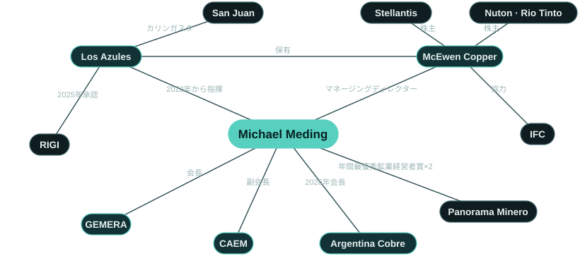

最新情報：2億4,000万米ドルのタームローン
マッキュアン・カッパー（McEwen Copper）は2026年8月27日、2億4,000万米ドルのシニア担保付タームローンによる資金調達を完了した。調達資金は、2027年半ばを目標とする最終投資決定（FID）に向けたロス・アスレスのエンジニアリングと初期工事に充てられる。[7]
This financing reflects our lenders' confidence in Los Azules and in the progress Argentina has made over the past two and a half years. […] We are proud to be building Los Azules here.今回の資金調達は、ロス・アスレスに対する融資者の信頼と、この2年半にアルゼンチンが遂げた進展への信頼を反映したものです。[…]私たちはこの地でロス・アスレスを建設することを誇りに思います。（英語原文の翻訳）
概要
ロス・アスレス（Los Azules）はサン・フアン州カリンガスタ（Calingasta）のアンデス高地にあり、鉱物資源量の総量でみて未開発の斑岩銅鉱床として世界10位の規模を持つ。マイケル・メディング氏は2022年2月にこのプロジェクトの指揮を任され、当初はバイスプレジデント兼ゼネラルマネージャーとして、2026年からはマッキュアン・カッパー（McEwen Copper）のマネージングディレクターとして率いている。就任1年目にチームは32人から直接雇用142人に拡大し、フィージビリティ・スタディ（FS）に至る3シーズンの掘削は総延長12万メートルを超えた。同じ時期に同氏は、ステランティス（Stellantis）とリオ・ティント（Rio Tinto）傘下のヌートン（Nuton）を戦略的投資家として迎え入れ、国際金融公社（IFC）と協力協定を結び、ソシエテ・ジェネラル（Société Générale）をプロジェクト債務のフィナンシャル・アドバイザーに起用した。最終投資決定（FID）は2027年半ばの見通しで、電気銅の商業生産開始は2030年を目標としている。[1, 5, 7, 12–16]
デュッセルドルフに生まれ、ルール地方エッセンのアルフレート・クルップ校（Alfred Krupp Schule）で中等教育を終えた。PwCでキャリアを始め、同社の派遣でスイスに渡った。そのまま7年間とどまり、その間にCFO育成プログラムを通じてノバルティス（Novartis）に入社した。チリに移ったのを機に中南米での15年以上に及ぶキャリアが始まり、チリとアルゼンチンで多国籍企業のCFOを歴任した。鉱業界に入ったのは2010年で、バリック・ゴールド（Barrick Gold）のアルゼンチン事業CFOとして、ベラデロ（Veladero）鉱山の再建と鉱山寿命の延長、山東黄金（Shandong Gold）との戦略的提携で中心的な役割を果たした。トラフィグラ（Trafigura）では多金属鉱山事業のCFAOを務めた。欧州と南北アメリカの8か国で働いた経験を持ち、サン・フアンとトロントの二拠点で暮らす。[2, 3, 17, 18]
GEMERAでは外国人として初めて会長を務めるほか、アルゼンチン鉱業会議所（CAEM）の副会長、サン・フアン鉱業会議所（Cámara Minera de San Juan）の執行委員を務める。国内の銅会議Argentina Cobreでは、2025年に名誉会長、2026年に会長を務めた。Ruhr-Universität Bochumで理学士号（BSc）を、HHL LeipzigとIndiana University of PennsylvaniaでMBAを取得し、現在はUniversidad Católica de Cuyoで鉱業経営学修士課程を履修している。また、中南米鉱業の社会的操業許可（SLO）をテーマとする2026年の論文を、筆頭著者として学術誌Veredas do Direitoに発表した。[10, 19–23]

実績
ロス・アスレスで同氏が上げてきた成果と、そこに生かした経験。
未開発鉱山の資金調達
戦略的株主2社の参画、IFCとの協力、プロジェクト債務のアドバイザー起用、2億4,000万米ドルのタームローンを通じて、未開発の銅プロジェクトの資本基盤を築いた。
許認可と公共政策
ロス・アスレスの環境許可取得を主導し、RIGIで承認された初の銅プロジェクトに導いた。
資源からフィージビリティ・スタディへ
PEAの改訂版とFSを完成させ、プロジェクトを詳細設計段階に進めた。
サン・フアンのチーム
プロジェクトチームをサン・フアンに構え、地元サン・フアンの人材で固めた。
業界でのリーダーシップ
鉱業・投資の主要な舞台で、アルゼンチンの銅と探鉱について継続的に発信する。
内側から知る鉱山ファイナンス
ロス・アスレス以前に、企業財務と鉱山ファイナンスで20年の経験を積んだ。
事業へのAI活用
探鉱にAIを取り入れ、チーム全員がAIを使いこなせるよう育成した。
研究
中南米の鉱業における社会的操業許可に関する研究を発表している。
ロス・アスレスの概要
ロス・アスレス（Los Azules）は、サン・フアン州カリンガスタ（Calingasta）のアンデス山中にある斑岩銅鉱床である。2025年10月のフィージビリティ・スタディ（FS）が描くのは、露天掘りで採掘した鉱石をヒープリーチングとSX-EW（溶媒抽出・電解採取）で処理し、純度99.99％の電気銅（銅カソード）を現地で生産する鉱山である。精鉱は出荷せず、鉱滓ダム（テーリングダム）も設けず、電力は100％再生可能エネルギーで賄う計画となっている。確定・予定埋蔵量の含有銅量は102億ポンド（基準日：2025年9月3日）で、ベースケースで21年の鉱山寿命を支える。アルゼンチンの大型投資奨励制度（RIGI）に適用が認められた初の銅プロジェクトでもある。資源量、経済性、資金調達、成長シナリオの詳細はロス・アスレスのページで紹介している。[5, 6, 34]
ロス・アスレスの主な節目（2022〜2030年）
2022年2月にメディング氏が指揮を執って以降の歩み。[1, 4, 5, 7, 12, 14–16, 27, 34]
- 20222月マッキュアン・カッパーに入社し、ロス・アスレスの指揮を執る
- 20228月リオ・ティント傘下のヌートンが戦略的投資家に
- 202212月チームが1年で32人から直接雇用142人に拡大
- 20232月ステランティスが戦略的株主に
- 20236月予備的経済評価（PEA）の改訂版を公表
- 202311月年間最優秀探鉱企業賞
- 20245月FS向け掘削を完了：2022/23年の3万9,000メートルに続き、2023/24年は7万メートル
- 20248月YPF Luzと再生可能エネルギー100％の電力供給に関する覚書（MOU）を締結
- 202412月建設・操業に係る環境許可を取得
- 20256月ロス・アスレスの鉱石から初めて電気銅を生産（ラボ規模）
- 20259月IFCとの協力協定を締結。26億7,000万米ドルの投資計画でRIGIの承認を取得（銅プロジェクトとして初）
- 202510月FSを公表
- 20263月ロス・アスレス、ニューヨークのArgentina Weekで在アルゼンチン米国商工会議所（AmCham Argentina）から表彰
- 20265月ソシエテ・ジェネラルをプロジェクト債務調達のフィナンシャル・アドバイザーに任命
- 20268月スプロット、ロブ・マッキュアン氏らの融資団から2億4,000万米ドルのシニア担保付タームローンを調達
- 2027半ば最終投資決定（FID）とプロジェクト資金の全額調達（目標）
- 2030電気銅の商業生産開始（目標）
受賞・表彰


| 年 | 賞・表彰 | 授与団体 | 対象 |
|---|---|---|---|
| 2025 | 年間最優秀鉱業経営者賞 La Noche de las Distinciones, Argentina: Oro, Plata y Cobre（ブエノスアイレス、2025年12月）。 出典 ↗ | Panorama Minero | 個人 |
| 2024 | 年間最優秀鉱業経営者賞 Panorama Minero選考委員会が「戦略的なビジョンと確かな技術力」を兼ね備えている点を評価して選出。ブエノスアイレス、2024年12月。 出典 ↗ | Panorama Minero | 個人 |
| 2024 | 功労移民表彰 アルゼンチン国家移民局による「Diploma Migrante destacado」。2024年9月4日の移民の日にサン・フアンで行われた公式式典で、アルゼンチンの発展と文化的多様性への貢献を称えて授与された。 出典 ↗ | アルゼンチン国家移民局（Dirección Nacional de Migraciones） | 個人 |
| 2026 | 特別表彰（Argentina Week） 在アルゼンチン米国商工会議所（AmCham Argentina）は、RIGIの下での生産的投資への取り組みを評価し、Andes Corporación Mineraを表彰した。2026年3月、ニューヨークでのArgentina Week閉幕にあたりルイス・カプート経済相が授与し、メディング氏がロブ・マッキュアン氏とともに受け取った。 出典 ↗ | AmCham Argentina | ロス・アスレス |
| 2026 | CSR部門 優秀鉱業企業賞 Premios Argentina Mining（サルタ、2026年9月）。 出典 ↗ | Argentina Mining | ロス・アスレス |
| 2026 | 識字推進への貢献認証 州の識字計画「Comprendo y Aprendo」を支援したことによる。サン・フアン、2026年7月。 出典 ↗ | サン・フアン州政府 | ロス・アスレス |
| 2025 | Premio INVERTIR（鉱業部門） XIII Fórum Empresarial de Buenos Aires（2025年12月）で、マッキュアン・カッパーを代表して受賞。 出典 ↗ | LIDE Argentina | ロス・アスレス |
| 2023 | 年間最優秀探鉱企業賞 カリンガスタでの2022〜23年の探鉱キャンペーンに対して。ブエノスアイレス、2023年11月。 出典 ↗ | Panorama Minero | ロス・アスレス |
役職と経歴
現在の役職
- マネージングディレクターマッキュアン・カッパー2022年2月からロス・アスレスを率いる
- 社長兼ゼネラルマネージャーAndes Corporación Minera（ロス・アスレス）
- 会長GEMERA2024年から／外国人として初の会長
- 副会長CAEM2025〜2027年／Andes Corporación Mineraを代表
- 執行委員Cámara Minera de San Juan（サン・フアン鉱業会議所）2025〜2027年
- 会長Argentina Cobre2026年／2025年は名誉会長
- 名誉会長Expo San Juan Minera 2026
経歴
- PwC生産・財務コンサルティング。スイスで7年間勤務スイス
- ノバルティスCFO育成プログラム。国際事業部門の財務責任者を経てチリへスイス／チリ
- 多国籍企業チリとアルゼンチンでCFOを歴任チリ／アルゼンチン
- バリック・ゴールド2010年からアルゼンチン事業のCFO：ベラデロの再建、鉱山寿命の延長、山東黄金との提携サン・フアン
- トラフィグラ多金属鉱山事業のCFAO中南米
- マッキュアン・カッパー2022年2月からロス・アスレスを率いる。2026年からマネージングディレクターサン・フアン／トロント
学歴
- 理学士（BSc）、Ruhr-Universität Bochum
- MBA、HHL Leipzig Graduate School of Management
- MBA、Indiana University of Pennsylvania
- 鉱業経営学修士（在学中）、Universidad Católica de Cuyo
研究
- Meding, M., Arias-Valle, M. B., & Ocampo Abadía, A. A. (2026). “The Legitimacy Trilemma: Strategic Communication, Crisis of Trust, and the Maintenance of the Social License to Operate in Large-Scale Mining in Latin America.” Veredas do Direito, 23(1), e233939. doi:10.18623/rvd.v23.n1.3939
- Meding, M. E., Arias Valle, M. B., & Ocampo Abadía, A. (2025). “Mapping the Knowledge Landscape of Social License to Operate in Mining: A Bibliometric Study.” SSRN preprint. doi:10.2139/ssrn.5407877
本人の言葉
I’ve learned how to get things done in Argentina. Sometimes it is a matter of persistence, other times it is more about relationships than about formalities.アルゼンチンで物事を前に進める方法を学んだ。粘り強さが物を言うこともあれば、形式よりも人間関係が大事なこともある。
We believe in the future of Argentina. It’s in a good spot geopolitically and has what the world needs.私たちはアルゼンチンの将来を信じている。地政学的に有利な位置にあり、世界が必要とするものを持っている。
Queremos ser un buen vecino y que digan que somos un ejemplo de cómo se debería hacer minería.良き隣人でありたいし、鉱業のあるべき姿の手本だと言われるようになりたい。
Hasta diciembre del 2023, todo el mundo decía qué lástima que el proyecto está en Argentina. Hoy la respuesta es la opuesta: qué interesante que está en Argentina.2023年12月までは、誰もが「このプロジェクトがアルゼンチンにあるのは残念だ」と言っていた。今では反応が正反対で、「アルゼンチンにあるとは興味深い」と言われる。
Todos mis geólogos están trabajando hoy tanto con IA como con machine learning para multiplicar sus capacidades de análisis.私の地質技術者は全員、今ではAIと機械学習の両方を使い、分析能力を何倍にも高めている。
Nada funciona sin minería: los zapatos, el celular, el saco, el micro.鉱業なしでは何も成り立たない。靴も、携帯電話も、上着も、バスもそうだ。
Our main challenge isn’t engineering … it’s mobilizing the necessary funding so we can move at the pace we’d like.私たちの最大の課題はエンジニアリングではない……望むペースで進むために必要な資金を動員することだ。
La confianza se gana en gramos y se pierde en kilos.信頼はグラム単位で得られ、キロ単位で失われる。
最近の講演
| 年 | 日付 | 都市 | イベント | 役割 |
|---|---|---|---|---|
| 2026 | 10月28日〜30日 | ブエノスアイレス／メンドーサ | 5th Argentina Critical Minerals Summit 予定 | 登壇確定 |
| 2026 | 9月23日 | ビーバークリーク | Precious Metals Summit | Investing News Networkによるインタビュー |
| 2026 | 9月 | ブエノスアイレス | X Foro PYMES Italia–América Latina | 「Minerales críticos y desarrollo federal」（重要鉱物と連邦の発展）、サン・フアン、フフイ、カタマルカ各州の知事とともに登壇 |
| 2026 | 9月 | アルゼンチン | Forbes Mining Summit | 「En Foco」、フェルナンド・エレディア氏とともに登壇 |
| 2026 | サンティアゴ（チリ） | Argentine Embassy in Chile | 「Perspectivas de la Minería en la Región」（地域における鉱業の展望）、両国の鉱業当局者とともに登壇 | |
| 2026 | 8月 | ブエノスアイレス | LA NACION, Minería | ホセ・デル・リオ氏との対談 |
最近の報道
- Forbes ArgentinaCon el uso de IA, Los Azules espera descubrir nuevos recursos y aumentar la vida útil del proyecto
- Neura · Alejandro FantinoCaso 004: Michael Meding (McEwen Copper, Proyecto Los Azules) Liderologías - Filosofía del liderazgo
- LA NACIONMichael Meding: “La Argentina podría estar entre los cinco mayores productores de cobre del mundo”
- Benchmark SourceLos Azules Copper Project
- ReutersCobre y cerveza: ejecutivo minero alemán abre fábrica en Argentina para saciar su sed
- MDZLos Azules acelera hacia 2027: los detalles del plan de inversión de US$ 4.000 millones
よくある質問
マイケル・メディング氏はどのような人物か
ドイツ人の鉱業経営者で、2022年2月からアルゼンチン・サン・フアン州のロス・アスレス（Los Azules）銅プロジェクトを率いている。マッキュアン・カッパー（McEwen Copper）のマネージングディレクターであり、GEMERA会長も務める。2024年と2025年には年間最優秀鉱業経営者に選ばれた。[1, 2, 8, 9]
ロス・アスレスで何を成し遂げたか
同氏の下で、プロジェクトは2024年12月に環境許可を取得し、2025年10月にフィージビリティ・スタディ（FS）を公表した。アルゼンチンの大型投資奨励制度（RIGI）では銅プロジェクトとして初めて承認を受け、2026年8月には2億4,000万米ドルのタームローンで資金を確保した。ステランティスとリオ・ティント傘下のヌートンが戦略的株主として参画し、国際金融公社（IFC）とは協力協定を結んでいる。[4–7, 12, 14]
マイケル・メディング氏はどのような賞を受けているか
年間最優秀鉱業経営者賞（Panorama Minero）を2024年と2025年に受賞したほか、2024年にはアルゼンチン国家移民局（Dirección Nacional de Migraciones）からDiploma Migrante destacadoを授与された。同氏の下でロス・アスレスも、2023年の年間最優秀探鉱企業賞、2025年のLIDE INVERTIR賞（鉱業部門）、2026年のAmCham Argentinaによる特別表彰などを受けている。[8, 9, 25, 35]
GEMERAとは何か
Grupo de Empresas Mineras Exploradoras de la República Argentinaの略称で、アルゼンチンの探鉱企業団体である。メディング氏は2024年から外国人として初めて会長を務め、アルゼンチンは探鉱投資を3倍に増やす必要があると主張している。[10, 19, 36]
どのような職歴を持つか
企業財務と鉱山ファイナンスである。スイスでPwCとノバルティスに勤務した後、チリとアルゼンチンの多国籍企業でCFOを歴任した。2010年からはベラデロを含むバリック・ゴールドのアルゼンチン事業でCFOを務め、トラフィグラでは多金属鉱山事業のCFAOに就いた。[2, 18]
マイケル・メディング氏の拠点はどこか
ロス・アスレスの運営拠点であるアルゼンチンのサン・フアンと、マッキュアン・カッパーの本社があるトロントの2か所である。[37]
何語を話すか
ドイツ語、英語、スペイン語。[2]
出典
- 1GlobeNewswire. McEwen Copper Announces Management Addition. 2022-02-17. www.globenewswire.com
- 2McEwen Inc.. Management team: Michael Meding, Managing Director, McEwen Copper. 2026. www.mcewenmining.com
- 3Tiempo de San Juan. Cómo piensa, qué hace y los secretos del gerente de Los Azules. 2023-05-07. www.tiempodesanjuan.com
- 4McEwen Inc. (SEC 8-K). Los Azules receives environmental approval for construction and operation. 2024-12-03. www.sec.gov
- 5McEwen Inc.. Los Azules Feasibility Study Confirms Economically Robust Copper Project With Leading ESG Performance. 2025-10-07. www.mcewenmining.com
- 6LA NACION. El Gobierno aprobó un nuevo proyecto RIGI: una minera invertirá US$2700 millones en San Juan. 2025-09-26. www.lanacion.com.ar
- 7McEwen Inc.. McEwen Copper Completes US$240 Million Term Loan to Advance Los Azules Toward Final Investment Decision. 2026-08-27. www.mcewenmining.com
- 8Minería & Desarrollo. Eligieron a Michael Meding de Los Azules como el Empresario Minero del Año. 2024-12-05. www.mineriaydesarrollo.com
- 9Diario de Cuyo. El vicepresidente de McEwen Copper, Michael Meding, fue elegido como 'Empresario Minero del Año 2025'. 2025-12-04. www.diariodecuyo.com.ar
- 10EconoJournal. Michael Meding, nuevo presidente de Gemera. 2024-10-07. econojournal.com.ar
- 11McEwen Inc.. Los Azules project page. 2026. www.mcewenmining.com
- 12Stellantis. Stellantis announces strategic copper investment in Argentina. 2023-02-27. www.stellantis.com
- 13GlobeNewswire. McEwen Copper announces an additional US$35 million investment by Nuton. 2024-10-24. www.globenewswire.com
- 14IFC, World Bank Group. IFC supports McEwen Copper on sustainable financing for Los Azules. 2025-09-24. www.ifc.org
- 15McEwen Inc.. McEwen Copper appoints Société Générale as financial advisor for project debt financing of Los Azules. 2026-05-14. www.mcewenmining.com
- 16LinkedIn, Michael Meding. 2022 achievements at Los Azules (team 32 to 142). 2023-01-02. www.linkedin.com
- 17LinkedIn, Michael Meding. Abitur at the Alfred Krupp Schule, Essen. 2026-01-23. www.linkedin.com
- 18Mining Press. Michael Meding (Barrick): San Juan, por la minería, más independiente. 2014-09-08. miningpress.com
- 19Handelsblatt. Global Risk: Das erwartet Investoren in Mileis Argentinien. 2024-12-10. www.handelsblatt.com
- 20CAEM. La Cámara Minera de San Juan eligió nuevas autoridades. 2025-07-07. caem.com.ar
- 21LinkedIn, Michael Meding. Honorary President, Argentina Cobre 2025. 2025-08-05. www.linkedin.com
- 22LinkedIn, Los Azules. Los Azules en Expo San Juan Minera 2026. 2026-05-07. www.linkedin.com
- 23Veredas do Direito. The Legitimacy Trilemma (Meding, Arias-Valle, Ocampo Abadía, 2026). 2026-01-09. doi.org
- 24Fastmarkets. Goldcorp founder Rob McEwen bets big on Argentine copper. 2025-06-03. www.fastmarkets.com
- 25LinkedIn, Michael Meding. RIGI Champion, AmCham Argentina. 2026-03-12. www.linkedin.com
- 26Minería & Desarrollo. El proyecto de cobre Los Azules en San Juan obtuvo luz verde para su explotación. 2024-12-03. www.mineriaydesarrollo.com
- 27Boletín Oficial de la República Argentina. Resolución 1553/2025, Ministerio de Economía: Proyecto Los Azules admitted to RIGI. 2025-10-14. www.boletinoficial.gob.ar
- 28LinkedIn, Michael Meding. Feasibility drilling completed: 70,000 metres this season. 2024-05-16. www.linkedin.com
- 29The Motley Fool (transcript). McEwen (MUX) Q2 2026 earnings call transcript. 2026-08-13. www.fool.com
- 30Minería & Desarrollo. Los Azules invirtió USD 83,9 millones en los últimos 16 meses. 2026-06-08. www.mineriaydesarrollo.com
- 31Forbes Argentina. Con el uso de IA, Los Azules espera descubrir nuevos recursos. 2026-09-03. www.forbesargentina.com
- 32LinkedIn, Michael Meding. Whole team trained on AI. 2026-04-26. www.linkedin.com
- 33SSRN. Mapping the Knowledge Landscape of Social License to Operate in Mining: A Bibliometric Study (Meding, Arias Valle, Ocampo Abadía, 2025). 2025. doi.org
- 34YPF Luz. YPF Luz y Los Azules firman acuerdo exclusivo de energía renovable. 2024-08-26. www.ypfluz.com
- 35LinkedIn, Michael Meding. Diploma from the Dirección Nacional de Migraciones, San Juan. 2024-09-04. www.linkedin.com
- 36Ámbito. GEMERA advirtió que Argentina desconoce el 80% de sus recursos mineros. 2026-05-12. www.ambito.com
- 37McEwen Inc. (SEC 10-K/A). McEwen Copper Inc. financial statements 2024 (head office). 2025-05-02. www.sec.gov
- 38Reuters via GBM. Cobre y cerveza: ejecutivo minero alemán abre fábrica en Argentina. 2026-05-12. gbm.com